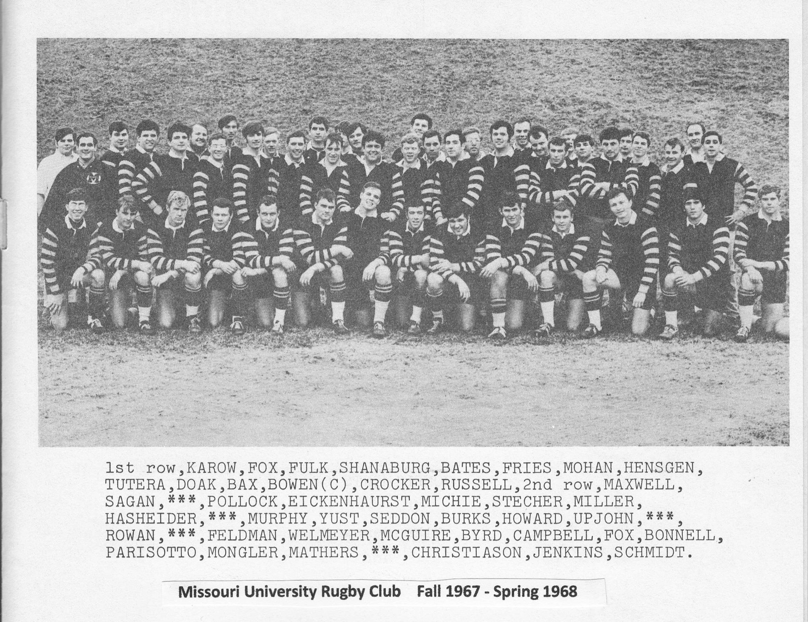
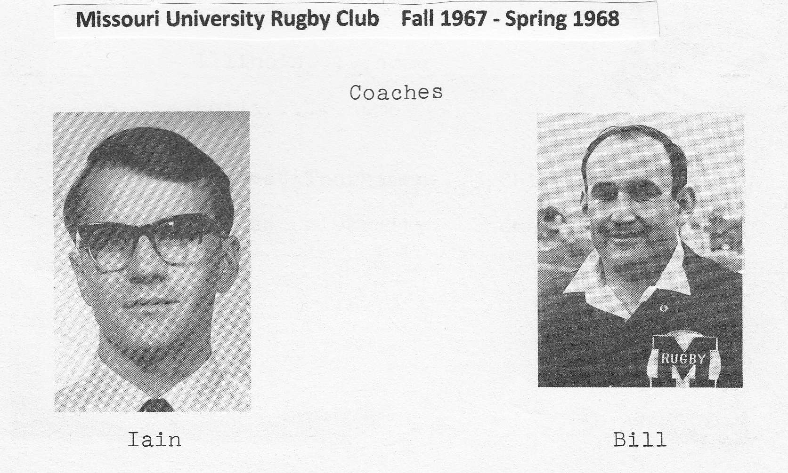

Mizzou Rugby Season Archive
Fall 1967: 4–1 · Spring 1968: 9–2–1 · Mardi Gras Tournament: 2nd Place
New coaches, a 4–1 fall, and a 9–2–1 spring.
In the fall of 1967 the “A” team went 4–1, the only loss coming by a single point to a strong University of Illinois side in a hard-hitting match at Champaign.
By spring, two seasoned ruggers were guiding the club: Coach Bill Jenkins of Pretoria, South Africa, and Assistant Coach and player Iain Christison of Glasgow, Scotland. The season opened at the Mardi Gras Tournament in New Orleans on February 24–25, where the Black & Gold beat Washington D.C. RFC 11–0 and the Kansas City Blackhawks 14–9 before falling 16–0 to a very strong Wisconsin side — good for second place. The club then went unbeaten through six straight: Kansas U. Alumni 5–0, Rolla 8–5, Iowa 19–0, Quad City 13–0, a 5–5 draw with St. Louis U., and Holy Cross 11–3. After home dates with Illinois, Rolla, and Kansas, the “A” team finished 9–2–1, its only other loss coming against Notre Dame at the Midwest Tournament in Chicago on May 11.
| Date | Result | Opponent |
|---|---|---|
| Feb 24–25, 1968 | W 11–0 | Washington D.C. RFC · Mardi Gras Tournament |
| Feb 24–25, 1968 | W 14–9 | Kansas City Blackhawks · Mardi Gras Tournament |
| Feb 24–25, 1968 | L 0–16 | Wisconsin · Mardi Gras Tournament |
| March 2, 1968 | W 5–0 | Kansas U. Alumni |
| March 9, 1968 | W 8–5 | Rolla |
| March 16, 1968 | W 19–0 | Iowa |
| March 23, 1968 | W 13–0 | Quad City |
| March 30, 1968 | T 5–5 | St. Louis U. |
| April 14, 1968 | W 11–3 | Holy Cross · touring side |
| Spring 1968 | — | Illinois, Rolla and Kansas at home · one of these three results is not recorded |
| May 11, 1968 | L | Notre Dame · Midwest Tournament, Chicago |
Records and scores from the club's Spring 1968 program and Dan McGuire's “Missouri University Rugby Club — The First Years, Fall 1966–Spring 1969,” presented at the inaugural meeting of the Mizzou Rugby Alumni Association on October 28, 2011. McGuire notes that the winner of one of the three home matches against Illinois, Rolla and Kansas was never written down.
The club's second season — Fall 1967 to Spring 1968. Captain: Joe Bowen.


| Name | Hometown |
|---|---|
| Bill Bates | Storm Lake, IA |
| Steve Bax | Kansas City |
| Bruce Beckett | — |
| Ron Bonnell | St. Louis, MO |
| Joe Bowen (Captain) | Wooster, OH |
| Tom Burks | Little Rock, AR |
| Byrd (first name unknown) | — |
| Jack Campbell | — |
| Dan Christie | Houston, MO |
| Iain Christison | Glasgow, Scotland |
| Jim "Country" Clark | Lagator, WI |
| Gary Clifford | El Dorado Springs, MO |
| John Cochran | Hannibal, MO |
| Ray Crocker | St. Louis, MO |
| Dennis Dahms | Hamilton, MO |
| Gordon Doak | Osborn, MO |
| John Early | Cameron, MO |
| Keith "Ike" Eickenhorst | St. Louis, MO |
| Barry Estell | Cameron, MO |
| Stan Feldman | University City, MO |
| Ray Fox | Brentwood, MO |
| Rick Fox | — |
| Lance Friesz | — |
| Michael Fulk | — |
| Mike Fulk | — |
| Jay Hasheider | — |
| Mike Hensgen | Kirkwood, MO |
| Mike Hoffman | South Pasadena, CA |
| Phil Howard | Brentwood, MO |
| Bill Impey | Houston, MO |
| Jon Jarrett | Ballwin, MO |
| Bill Jenkins | Pretoria, South Africa |
| John Karow | Yonkers, NY |
| John Kesch | Kansas City |
| John Leet | Columbia, MO |
| Steve Mathers | Crestwood, MO |
| Chip Maxwell | St. Louis, MO |
| Jim Maxwell | St. Louis, MO |
| Mark McConaghy | Peoria, IL |
| Dan McGuire | St. Louis, MO |
| Larry Miller | Tulsa, OK |
| Jim Mitchie | Caruthersville, MO |
| Tom Mohan | Overland, MO |
| Rick Mongler | Mexico, MO |
| Murphy (first name unknown) | — |
| Andy Orf | St. Louis, MO |
| Hank Parisotto | St. Louis, MO |
| Alan Pepper | Ladue, MO |
| Allen Pollack | — |
| Darryl Rodgers | Bowling Green, MO |
| Bob Roper | — |
| Rocky Rowan | — |
| Jack Russell | Carthage, MO |
| Mike Sagan | University City, MO |
| Pete Schanaberg | Newark, OH |
| Chuck Schmitt | St. Ann, MO |
| Scott Seddon | Clayton, MO |
| Eric Sowers | Brunswick, MO |
| Charlie Stecher | St. Louis, MO |
| Steve Suellentrop | St. Charles, MO |
| Warren Sutton | Auckland, New Zealand |
| Ronald Turski | East St. Louis, IL |
| Gino Tutera | Kansas City |
| Bryant Upjohn | Kansas City |
| Jim Walker | University City, MO |
| Ed Wellmeyer | St. Louis, MO |
| Ernest Wilcox | Montezuma, IA |
| Jim Yust | Jennings, MO |
From the Missouri University Rugby Club Combined Roster 1966–69, compiled by Dan McGuire from original club programs and rosters, plus the season team photo. Spot an error or a missing teammate? Use the form below.
Roster info, season records, photos, stories — every detail helps.